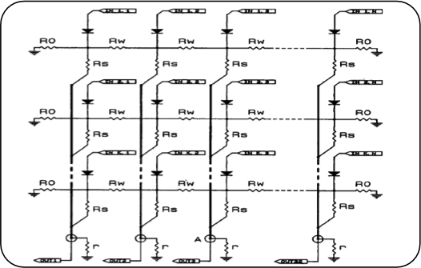

The WP2 is focused on the development of a next generation of VR/AR systems for supporting personnel working in dangerous areas. The main features required are then reliability, flexibility, portability, and speed, features which are not found all together in the current state of the art systems.
To reach this ambitious task the system will be developed Pivoting on a new hardware concept: the WRM (weighting resistive matrix) developed by Roma2 (Figure 1).
This an analog computer based on a special resistive network able to perform at extreme speed a very good approximation of the least square fit between the data and a given hypothetical pattern, transforming the image in terms of probability distributions in the given pattern parametric space (Figure 2).
The original concept of this invention comes from the need for high processing speed in the High Energy Physics experiments trigger systems, able to identify an elementary particle in a few nanoseconds.